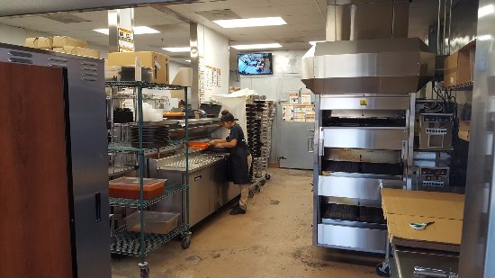

Melisa Ozel
Hello, I'm Melisa Ozel. My current professional expeirence includes a year long job at Little Caesar's, and an internship from high school in which I worked for senator Joel Anderson. I am well versed in customer service especially, due to my extensive experience in which I had to talk to either customers or constituents. In regards to handling pressure, I am capable, due to the fast and somewhat stressful nature of fast food service. In addition, I am aware of how to operate a wide variety of machinery related to food service, and am aware of how to use appliances in an office setting.
Experience
Crew Member
• Handled funds and change returned to customers
• Managed phone calls and the placing of orders
• Peparation of food provided to customers in a high stress, rapidly developing environment
• Operation of professional machinery used to produce food at an expeditious rate
Intern
• Processing and sorting of official documents
• Representation of a state senator in conduct and work
Club Member
• Frequent attendance and participation in club activities
• Active contributor to group discussions regarding ongoing political events
• Recruited students across campus interested in politics and the study of political science
• Printing and hanging of posters across campus describing critical dates regarding substantial club events and political events
Education
University of California Riverside
Portfolio
